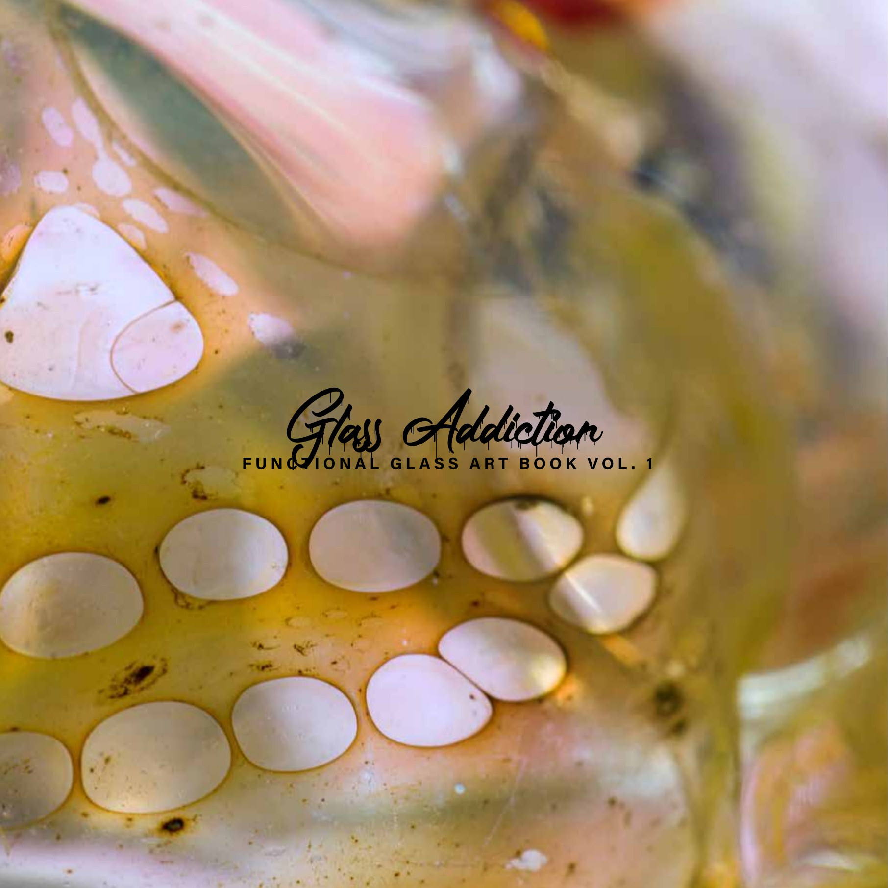

Il libroThe book · 2021
Glass Addiction
Functional Glass Art Book — Vol. 1
Dal progetto è nato un libro: Glass Addiction — Functional Glass Art Book Vol. 1, uscito nel 2021. Centotrentacinque pagine in formato quadrato, dedicate per intero al vetro funzionale d'autore fotografato da vicino: la materia, le bolle, i colori dentro il vetro, i dettagli che a occhio nudo non si vedono.
È il primo libro del genere fatto in Italia. Non un catalogo di prodotti: un libro d'arte, in cui i pezzi vengono trattati come sculture.
A book came out of the project: Glass Addiction — Functional Glass Art Book Vol. 1, published in 2021. One hundred and thirty-five square-format pages given entirely to artist functional glass photographed close up: the material, the bubbles, the colours inside the glass, the details the naked eye misses.
It is the first book of its kind made in Italy. Not a product catalogue: an art book, where the pieces are treated as sculptures.
Il Volume 2 è in lavorazione, realizzato con Chileanglass: oltre trecento pagine.Volume 2 is in the works, made with Chileanglass: more than three hundred pages.